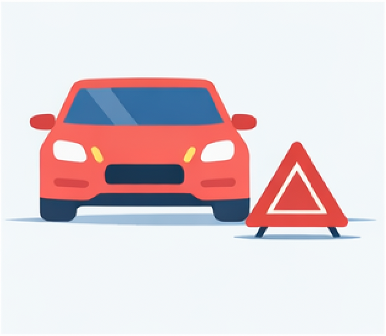
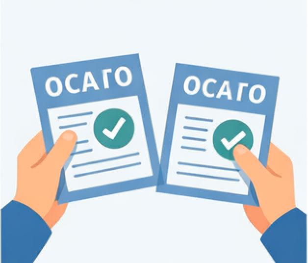
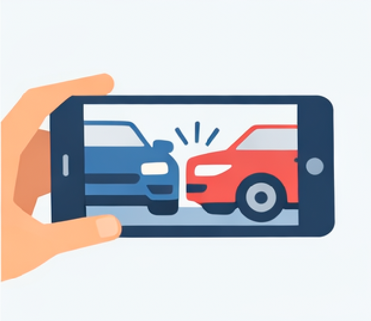
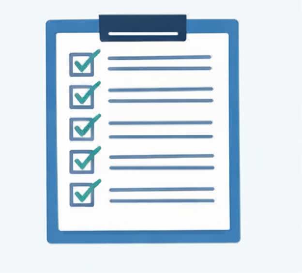
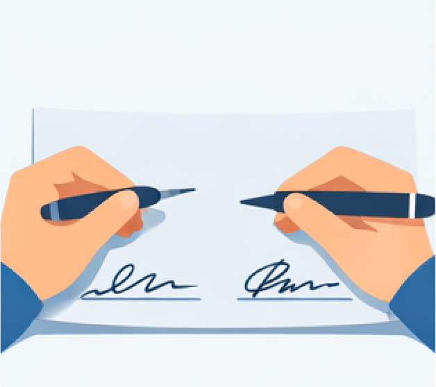

Шаг 1. Тип происшествия
Укажите, что произошло. Это повлияет на порядок дальнейших действий.
Фотографии и документы
Загрузите фото с места ДТП и файлы (полис, ПТС, права).
Можно выбрать несколько файлов. Размер и формат будут проверяться на сервере.
Шаг 2. Обозначьте место ДТП
Выставьте аварийный знак и включите аварийную сигнализацию.

Шаг 3. При необходимости вызовите 112
Если есть пострадавшие или угроза, незамедлительно позвоните по номеру 112.

Шаг 4. Проверьте ОСАГО
Убедитесь, что у обоих водителей есть действующие полисы ОСАГО.

Шаг 5. Сделайте и приложите фотографии
Сфотографируйте место ДТП, повреждения и номера машин.

Добавьте фото места ДТП и повреждений. Размер и формат будут проверяться на сервере.
Шаг 6. Постройте схему ДТП
Используйте элементы, чтобы показать расположение машин и повреждений.
Шаг 8. Отметьте характер ДТП и повреждения
Поставьте галочки в пунктах, которые подходят к вашей ситуации.

Шаг 9. Подписи обоих водителей
Убедитесь, что оба водителя поставили подписи в документе.

Шаг 10. Передайте европротокол в страховую
Передайте оформленный европротокол в страховую компанию в установленные сроки.
Подсказки и объяснения
Краткие объяснения и пошаговый порядок действий.
Что такое европротокол?
Это официальный документ, с помощью которого два водителя могут оформить ДТП без вызова полиции, если нет пострадавших и соблюдены необходимые условия (два авто, ОСАГО, согласие сторон и т.п.).[web:61]
Порядок действий при составлении европротокола
- Остановитесь, включите аварийку и выставьте знак аварийной остановки.
- Убедитесь, что никто не пострадал. Если есть пострадавшие — вызывайте скорую и полицию.
- Проверьте, что у обоих водителей есть действующий полис ОСАГО.
- Сфотографируйте место ДТП, повреждения и номера машин.
- Нарисуйте схему ДТП (можно в модуле «Схема ДТП»).
- Совместно заполните форму европротокола: дату, место, данные машин и водителей.[web:61]
- Отметьте галочками подходящие пункты о характере ДТП и повреждениях.
- Поставьте подписи обоих водителей.
- Передайте оформленный европротокол в страховую компанию в установленные сроки.
Как правильно фотографировать ДТП?
- Сделайте общий план дороги и расположение машин.
- Снимите повреждения крупным планом для каждой стороны.
- Зафиксируйте номера, знаки, разметку и следы торможения.
Задать вопрос ассистенту
Короткий чат, где можно спросить о конкретной ситуации.